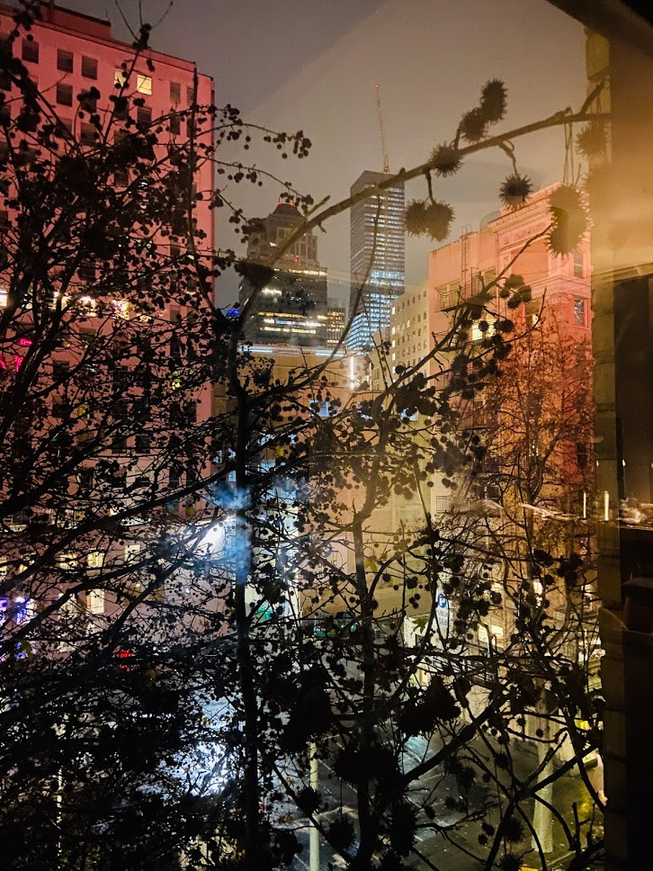
(시애틀의 새벽이자 숙소에서 바라본 도시의 모습. 이제 와서 보니 저
나무는 어떤 나무였을지 궁금하다.)
첫째 날 투어를 마치고 숙소에 돌아오니 다들 피곤함을 주체하지 못하는 상태였다. 나는 여행 계획을 세울 때부터 이번 여행에서 가장 중요한 것이 체력이라고 생각했다. 미 서부를 차 없이 뚜벅이로 다닌다? 미국의 땅덩어리와 “3보 이상이면 승차”라는 미국인들의 인식을 떠올려 봤을 때, 지하의 헨리 포드는 무모한 우리를 혼내야만 했다. 또 힘든 여행이 될 것이라고 한국에서 휴식을 편히 취하고 떠나왔는지 되돌아보면 그렇지도 않다. 잠시 시간을 앞으로 되돌려보자.
때는 출국 D-1, 서울 시각 2020.01.19. 22시 경 ‘여행준비’와 ‘전야제’라는 그럴싸하고도 이상한 명목 아래 우리 4명과 +2명의 친구가 모였다. 당연히 모여서 계획을 짜기는커녕(그동안 그랬던 것처럼) 카페에 가 시답잖은(누군가에겐 의미 있었을 수도 있지만) 얘기를 나눴다. 여기까지는 뭐 눈 뜨고 봐줄 만 하다. 카페가 문을 닫을 때 집에 갔어야 했다. 허나 우리는 곧바로 노래방으로 향했다. 음? 차릴 정신도 나가버린 3명의 미치광이들은 뭘 그리 꼬라박고 싶었는지 마이크에다가 범퍼카를 부르짖었고 엄마한테 늦는다고 전활 걸었다. 집나간 정신을 되찾아 집으로 몸뚱이까지 복귀시킨 시각은 대략 새벽 1시. 그때부터 난 캐리어를 꺼내서 짐을 꾸리기 시작했다. 여권, 비행기티켓, 비자, 그 외에 미리 출력해 간 티켓들, 옷, 렌즈, 위생용품 등 챙겨야 할 것들이 한 가득이었다.(사실 비행기티켓이나 비자는 출력해 갈 필요가 없었다. 허나 어떤 일이 생길지 모르는 것이 여행이니깐?) 짐을 싸는 둥 마는 둥, 내 행위의 목적을 잊은 채 무의식적으로 시간을 보냈더니 어느새 새벽 5시. 출발 6시간 전이었다. 조금이라도 자는 것이 좋을 것 같아 눈을 잠깐 감았다 떴더니 대략 오전 8시. 남은 짐을 마저 싸고 여행 직전 가장 떨리는 순간인 캐리어 무게재기 시간을 맞이했다. 25kg을 초과할 것인가 말 것인가! 만약 넘는다면 다시 이 육중한 캐리어를 해체해 짐을 재 배분하는 매우 귀찮은 과정을 겪어야 한다. 다행히 아슬아슬하게 기준을 초과하지 않았고 나의 미진했던 짐 싸기는 끝이 났다. 덩달아 체력도 끝이 났다. 출국 D-Day, 여행은 그렇게 시작되었다.
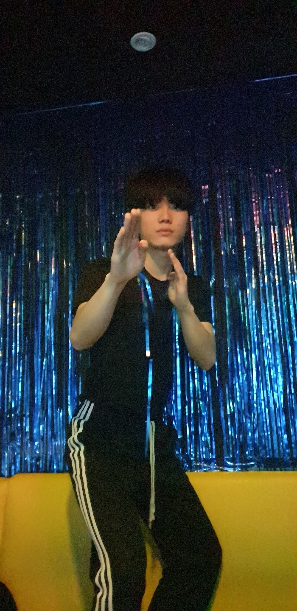
(디스 이즈 힙합! 역대급 광란의 밤의 한 장면.)
다시 시간을 뒤로 돌려 시애틀에서의 첫날밤. 이처럼 난장판으로
출발했으니 첫날 관광을 돌고도 체력이 남아났을까? 돌아다닌 걸로도
용하다. 결국 우린 그날 9시가 채 되기 전에 잠들어 버렸다. 원래
여행지에서의 첫날밤은 소소하게 술 한 잔 기울이며 삶을 뒤로한 채 떠나온
자들의 후련함에 대해 얘기하는 장면을 떠올리는 것이 일반적이지만 우린
그냥 잤다. 계속 잤다. 더 잠이 안 올 때까지, 눈이 감기지 않을 때까지
포근한 침대 시트에 처박혀 잠만 잤다.(시차 적응 대실패)
눈을 떠보니 새벽 5시가 채 안됐다. 다들 자는 줄 알았는데 다 깨어
있었다. 모두들 같은 생각이었겠지. 시애틀 2일 차, 본격적인 시애틀
투어가 시작될 예정이었기에 아침 일찍부터 나갈 채비를 했다. 오늘의 첫
관광지는 시애틀 퀸 앤 지역에 위치한 케리 공원이다. 시애틀에 오기 전,
케리 공원에서 맞이하는 시애틀의 아침 풍경이 너무나 좋다기에 가기로 한
관광지인데 숙소 근처에서 모노레일을 탄 뒤, 스페이스 니들에서 내려
도보로 20분 정도 걸어가면 도착할 수 있었다. 시애틀의 촉촉한 아침
비인지 이슬인지 모를 수분을 뚫고 우린 출발했다.
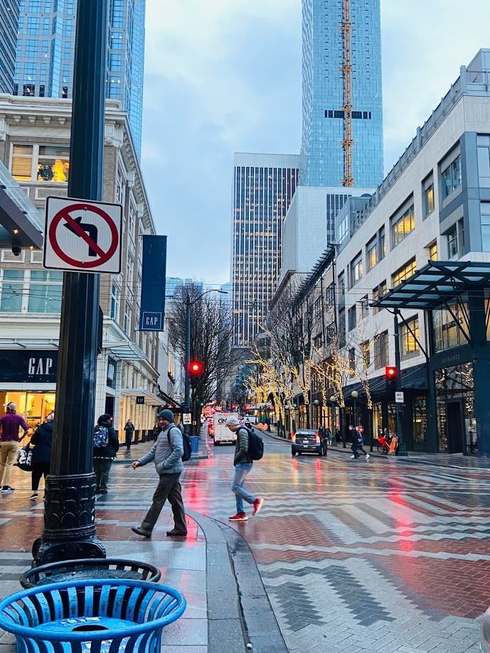
(시애틀의 겨울아침. 언제나 흐리고 비가 올락 말락 애를 태운다. 남들은
일터로, 우린 놀이터로 가는 길의 모습이다.)
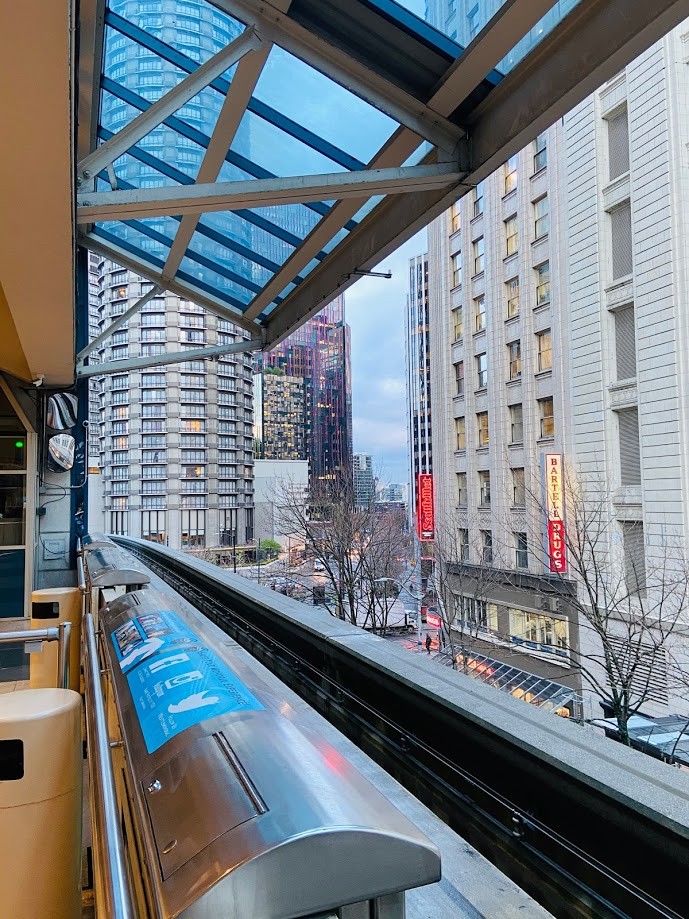
(모노레일 승강장의 모습. Westlake 지역에서 스페이스 니들까지 편하게
이동할 수 있다. 팁을 주자면 티켓은 미리 구입하는 것이 아니라
모노레일을 탄 뒤 거기 상주하는 직원에게 사는 방식이다. 관광객 말고도
출퇴근을 위한 직장인들, 학생들도 많이 타는 듯하다.)
모노레일은 정확히 스페이스 니들 바로 밑에서 우리를 내려줬다. 스페이스
니들은 시애틀의 대표 랜드마크이자 시애틀 하면 떠오르는 고층건물이다.
시애틀을 배경으로 한 영화, 드라마에 빠지지 않고 등장하며 모든 시애틀
기념품에 꼭 들어가 있다. 나 또한 여행을 떠나기 전 드라마 ‘그레이
아나토미’를 봤었는데 매 회 오프닝마다 시애틀의 조망과 그 속에 우뚝 서
있는 건물 하나를 볼 수 있었다. ufo를 꼭대기에 얹어놓은 듯 한 특이한 그
건물이 바로 스페이스 니들이었다니... 모니터 속에서만 보다가 실제로
보니 낯설면서도 반가운 모습이었다.
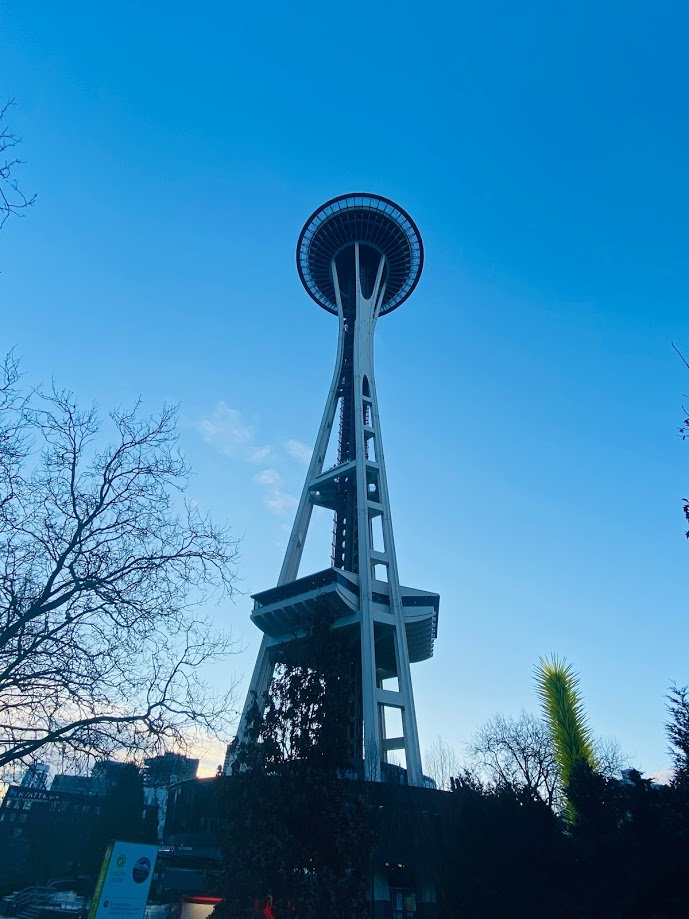
(아래에서 올려다 본 스페이스 니들. 정작 우리의 목적지는 아니었지만
그래도 대표 관광지를 보니 본격적인 시애틀 관광이 시작되었음을 알리는
것 같았다.)
스페이스 니들에서부터 케리 공원까지는 도보로 이동했다. 이동 중간
중간에 사진도 찍고 커피도 마시며 걸어가니 대략 25분 정도 걸린 것 같다.
젖어있는 땅 위로 떠오른 태양이 뿜어내는 햇살과 그를 반기는 듯 위로
팔을 뻗힌 나뭇가지들이 어우러져 아침 산책을 나온 4명의 인간들을
환영해주고 있었다.
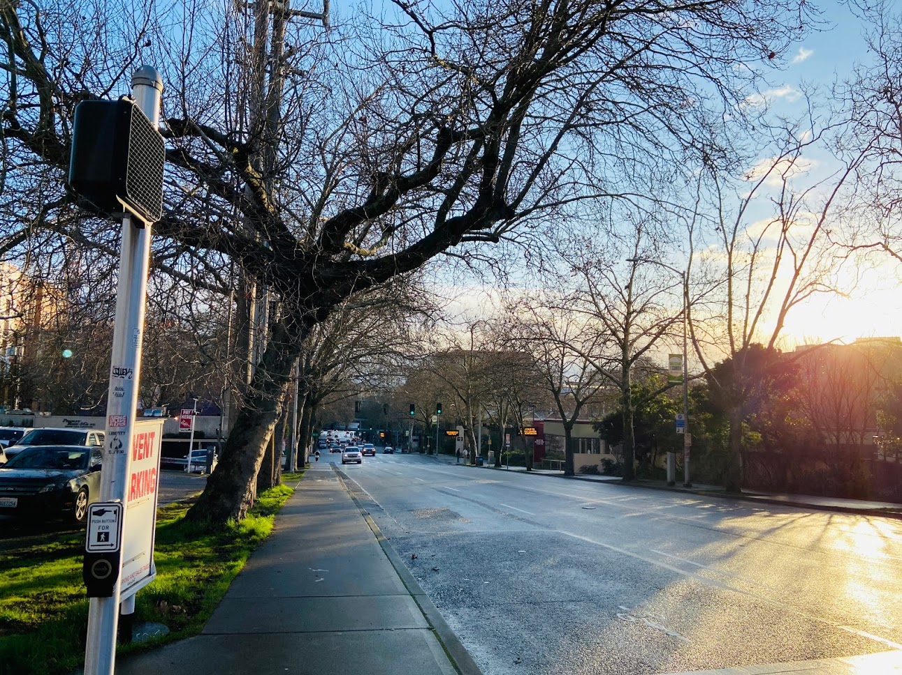
(가는 길목에 눈에 들어온 풍경. 상쾌하면서도 따스했던 아침을 맞이하며
야무지게 걸었다.)
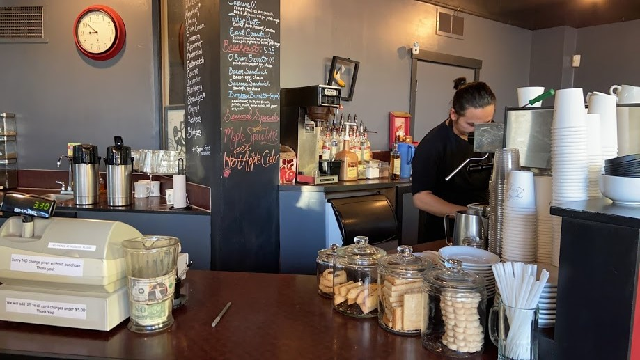
(잠시 들러 커피 한잔의 여유를 챙겼던 카페. 커피의 도시 시애틀답게 참
맛있었다. 앞엔 현실판 맹브가 서계신다.)
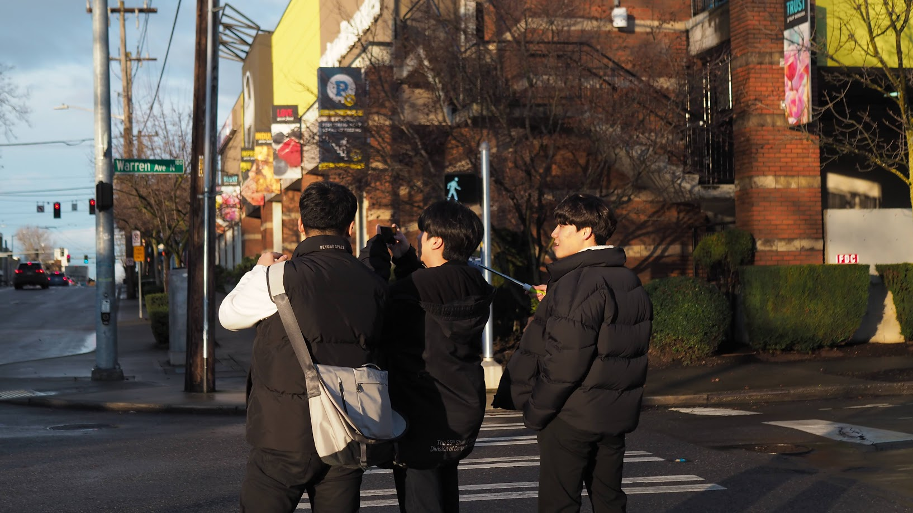
위의 사진을 봐보자. 각자 손에 카메라를 쥔 채 서로가 서로의 모습을
영상에 담아주면서 걸어간다. 이 사진을 촬영한 나머지 한 사람은
앞서가는 친구들의 모습과 시애틀의 고즈넉함을 열심히 카메라에 담는다.
아침 여행은 딱 위와 같은 구도로 진행되었다. 이 사진을 촬영한
창민이는 사진 찍는 데에 열중했고 나머지 3명의 사람들은 시애틀의
아침을 배경삼아 길을 걸어가며 입을 놀리기 바빴다. 그리고 우린 그런
우리의 모습을 'vlog'라는 고상한 이름하에 영상으로 담았다. 생각해보면
전날과는 사뭇 다른 여행의 모습이다. 여행을 한 편의 드라마라고
생각해보면 1일차에선 시애틀 도시의 모습, 시애틀 사람들, 시애틀 음식
등이 이 드라마의 주인공이었고 우리들은 그 주연들을 바라보고 맛보는
조연에 불과했다. 하지만 이날 아침의 주인공은 바로 우리들이었다.
서로가 서로의 말과 행동에 웃고 떠들며 추억을 만들어 내는 과정 속에
시애틀은 한 발짝 물러서 우리가 맘껏 주인공의 연기를 뽐낼 수 있도록
햇살, 구름, 거리의 모습과 같은 배경을 제공해주는 든든한 조연이
되어줬다. 덕분에 4명의 친구들은 어쩌면 하이파크시티에서 많이 했던
평범한 노닥거림에서도 여행의 행복과 추억을 뽑아냈고 그 감정의 공유와
연대를 통해 한결 가까워졌다. 김영하 작가의 책 『여행의 이유』를 보면
여행(기)은 보통 ‘추구의 플롯’을 지향하는데 외면적 목표를 향해가는
과정 속 의도치 않게, ‘뜻밖’의 내면적 목표를 성취하고 돌아오는
것이라고 한다. 내가 생각했던 이번 여행의 외면적 목표는 앞서 1일차에
서술했던 바와 같이 미국이란 나라의 정체성, 세계 초강대국의 힘,
미국의 명(明)과 암(暗)을 알아보고 느끼는 것이었다. 하지만 돌이켜보니
진정으로 여행을 찬란하게 빛냈던 것은 ‘우리’라는 이름으로 묶여 내
옆에서 먹고, 자고, 쌌던 친구들이었다. 외면적 목표의
달성을 위해 시간과 돈을 들여 비행기를 타고 태평양을 건너 멀리
떠나왔지만 일산의 작은 노래방에서부터 함께한 그들이 나의 비어있는
내면적 목표를 채워준, 진정한 ‘여행의 이유’였다.
즐겁게 웃고 떠들다 보니 어느덧 케리 공원에 도착했다. 하지만 우리 4명은
공원을 보는 순간 다 같이 얼이 빠져버렸다.

(우리가 생각한 미국의 드넓은 잔디밭이 있는 공원과는 거리감이 좀
있었다... 모두들 제대로 찾아온 것이 맞는지 한동안 뚫어져라 핸드폰만
보았다. 그 와중에 눈에 띈 것이 있었으니..!)
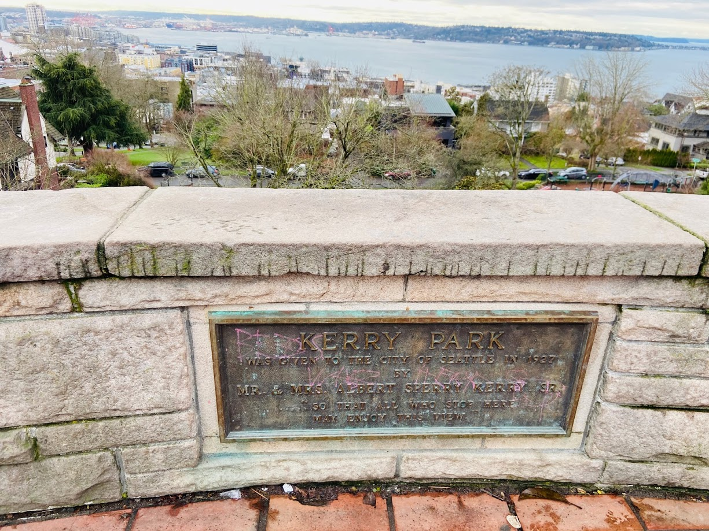
(여기가 케리파크가 맞댄다...)
여행이 꼭 계획에 들어맞게 생각대로 진행되지는 않는다. 돌발 변수나
사고가 생길 수도 있고 위와 같이 기대한 관광지의 예상치 못한 소박함
때문에 실망할 수도 있다. 허나 그것이 여행이다. 100%를 컨트롤 할 수
있다는 자세를 버리고 상황에 따라 유연하게 사고를 바꾸고 행동을
고쳐나가야 한다. 어쩌면 인간의 일생도 하나의 큰 여행이라고 본다면,
이런 자세가 필요하지 않을까 싶다. 모든 것을 내가 결정하고 내 뜻대로
될 것이라는 자만, 존재하지도 않는 인생의 마스터키를 향한 욕심은 이
세상의 험난함에 상대가 되지 않는다. 강한 폭풍이 비바람을 몰고
지나가도 버텨내는 갈대의 흔들림에서, 그 유연함에서 나는 어떻게 살
것인가? 되물어본다.
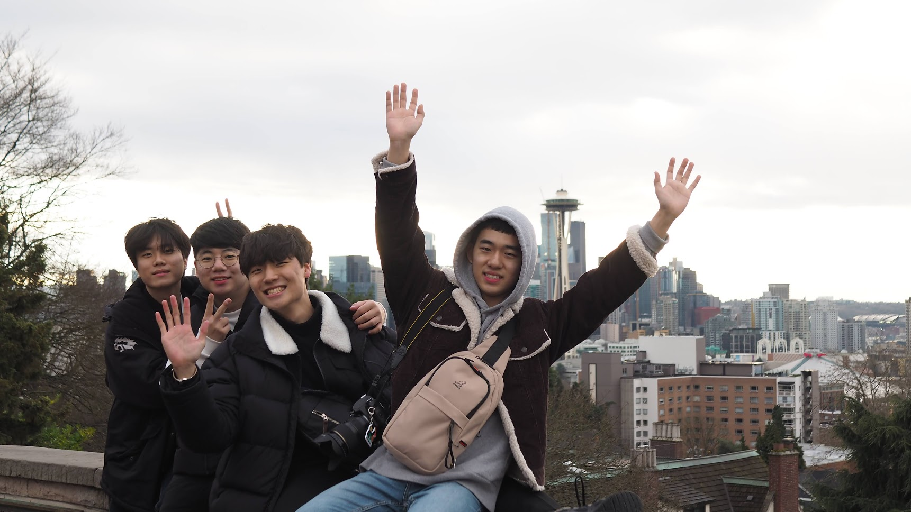
(케리 파크에서 시애틀 도시를 배경삼아.)
케리 파크의 첫인상은 당혹감이었지만, 공원에서 내려다보는 시애틀의 풍경은 정말 인상적이었다. 차차 공원도 그 나름의 소박한 매력이 보였고 우리는 한참을 그 공원에 서서 시애틀을 바라보았다. 그 후 공원에 갈 때와 똑같이 올 때도 쉬지 않고 입을 떠들어대며 스페이스 니들로 돌아왔다. 마치 21세기 서울에 처음 온 조선시대 사람과 같이 거리의 모든 가게, 버스 정류장, 어린이집, 집과 골목들을 눈에 담으며 돌아왔던 길. 아직도 기억에 많이 남는 케리 파크 여행기는 그렇게 끝이 났다.
케리 파크 다음 관광지는 스페이스 니들 옆에 위치한 대중문화
박물관(MoPOP)이다. 근데 문제가 하나 있다. 별로 기억에 남는 게 없다.
끽해야 두 지렁이를 움직여 공을 탈취하는 게임 정도? 시애틀 시티 패스에
포함되어 있어 갔지만 딱히... 다시 갈 것 같진 않다.
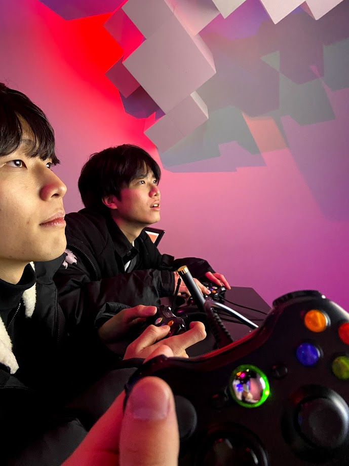
(게임기만 잡으면 빛나는 저 초롱초롱한 눈빛들을 보아라!)
박물관을 나오니 점심 먹을 시간이었다. 우리가 여행 중 식당과 메뉴를
정하는 방법에 대해서는 추후에 ‘샌프란시스코’편에서 더 자세하게 다룰
예정이지만 간략하게 소개하면 ‘여행하는 도시 당 한 번씩 만찬의 시간을
갖자!’가 우리의 생각이었다. 당시 우린 이미 1일차에 'crab pot'에서
만찬의 시간을 가졌기에 최대한 가성비가 좋은 식당을 가야 했다. 그래서
정한 곳은 바로 ‘ivar's clam chowder’. 시애틀의 대표 음식 중 하나인
클램차우더도 먹고 그 옆의 다음 관광지였던 수족관을 가기에도 위치가
좋았다. 스페이스 니들에서 식당까지는 우버를 이용했는데 우리의 여행 첫
우버였다. 한국에서도 우버, 타다 등으로 한때 떠들썩했던 차량 공유
서비스를 처음으로 미국에서 접해보는 순간. 낯선 이와의 만남으로 긴장도
되고 차가 제대로 가고 있는지, 혹시 옆길로 새는 건 아닌지 조금은
조마조마했다. 우리가 탄 차의 기사님은 용모나 억양으로 봤을 때 사우디와
같은 중동 지역에서 오신 것 같았다. 다행히 별 말 없이 기사님은 우리를
목적지에 잘 내려주셨고 “Have a good day~" 한마디 시크하게 날려주시고는
유유히 시야에서 사라졌다. 너무나 편하고 빨랐기에 앞으로도 우버를 많이
애용해야겠다고 생각하며 식당으로 들어갔다.
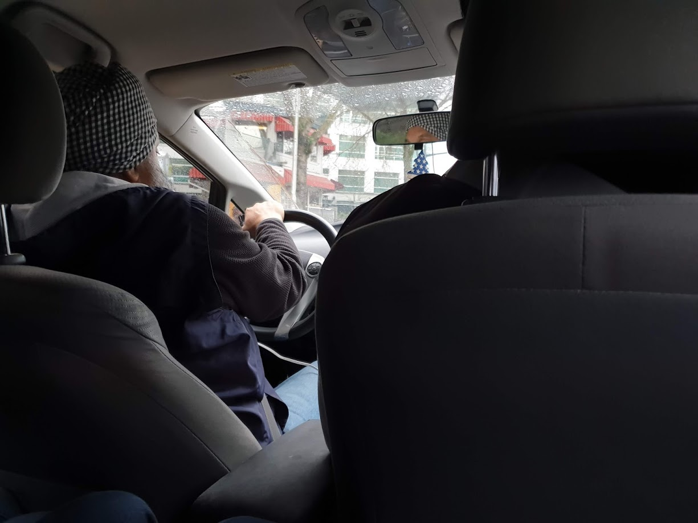
(우리의 첫 우버 기사님. 기억나는 기사님들이 많은데 이분도 그 중
한명. 빠르고 안전한 운행 감사합니다.)
말이 필요 없다. 내 입맛에 잘 맞았던 음식들. 사진부터 보고가자.
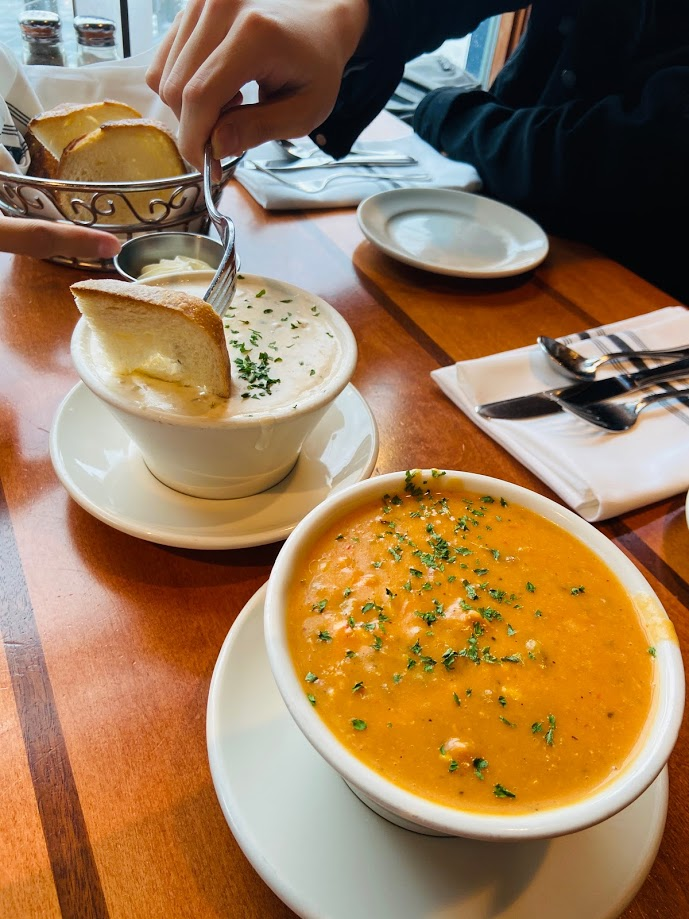
(클램차우더의 모습, 이 외에도 햄버거와 피쉬 앤 칩스(?)같은 것을
먹었다.)
식사를 마친 후 수족관으로 향했다. 그다음 일정인 크루즈 탑승 전까지
어중간하게 뜬 시간을 수족관이 잘 메워주었다. 이 역시 시티패스에
포함되어 있다. 시애틀 관광 필수품은 단연 시티패스라고 꼽을 수 있을
정도로 관광에 많은 도움이 되었다.

(헤헷. 니모다 니모~)
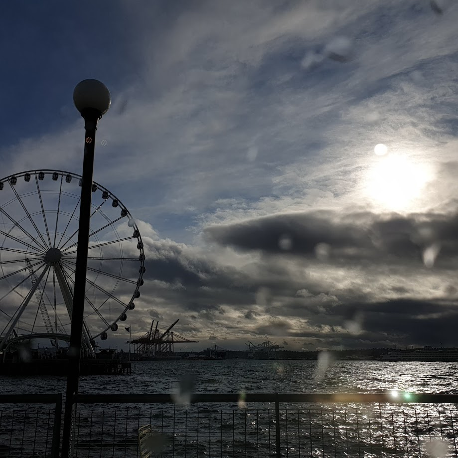
(이날도 비가 내렸다가 그쳤다가를 반복했다. 수족관에서 나올 때 찍은
사진인데 해가 나고 있어 크루즈에서의 풍경이 기대가 되었다. 그 기대는
얼마 못가 사라졌지만 말이다...)
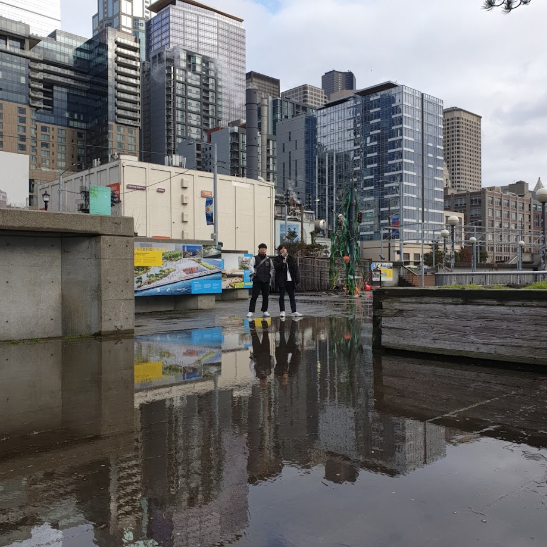
(배타기 직전. 요세미티 거울호수에 꿀리지 않는 시애틀의 빗물호수(?).)
시애틀은 태평양을 품고 있는 항구도시이다. 특히 아시아 진출을 위한 그
지리적 위치가 너무나도 좋다. 그런 시애틀의 이미지에 맞게 여행객들을
위한 크루즈 투어가 대표 관광 상품으로 자리하고 있다. 한강 유람선보다
조금 작은 크기의 배에 올라 자리를 잡으니 가이드가 나와 관광객들에게
어디서 왔냐고 묻기 시작했다. 노스캐롤라이나, 밴쿠버, 다음은 우리의
차례. South Korea! 등장의 순간이었다. 이후 배가 출항하자 가이드는
시애틀 항구의 부분, 부분을 가리키며 시애틀의 역사, 지리적 환경, 현재
시애틀의 경제 등 많은 이야기를 풀어 놓기 시작했다. 아쉽게 나의 영어
실력이 썩 좋지 않았기에 많은 부분을 흘려버린 것 같지만 영어듣기실력도
늘리고 시애틀에 대해 더 알아갈 겸 최대한 집중해서 듣기위해
노력했다.
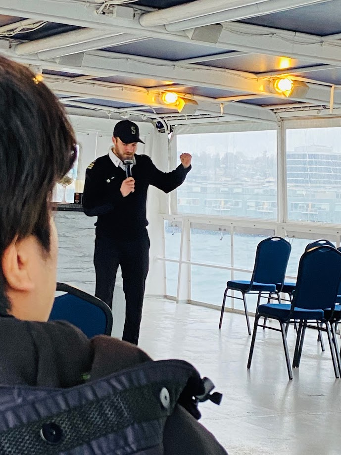
(열심히 설명해주시던 가이드 선생님의 모습)
한창 영어듣기평가가 진행되는 와중에 창 밖에 빗줄기는 점점 거세지기
시작했다. 급기야 폭우가 쏟아져 내리면서 딱히 뭐가 보이지도 않았다.
몸은 피곤하고 추적추적 빗소리가 들려오는 와중에 의자에 앉아 있으려고
하니 자연스레 눈이 감겼다. 졸음을 깨기 위해 밖에 나가 풍경을
구경하기도 하고 희원이와 비바람 속에서 사진도 찍으며 남은 시간을
보냈다.
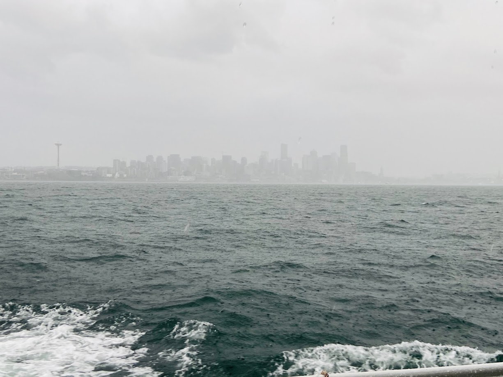
(비에 가려진 시애틀 도심지의 모습.)
밖에서 돌아오니 우리의 남은 두 친구는 이미 모두 딥슬립에 빠져 꿈나라로
떠나있었다. 어찌 보면 우리 여행에 있어 가장 흔한 풍경이었다. 시차 적응
실패와 도보 관광 강행군, 비가 계속해서 내려오는 미 북서부의 겨울날씨,
충분치 못한 수면시간은 언제나 하루의 마지막을 피로로 가득하게
만들었다. 여기에 더해 단체 사진을 위해 카메라 두 대와 삼각대까지 들고
다닌 창민이는 흔들리는 배 안에서도 졸도한 사람처럼 부동자세로
잠들었다. 로마의 카이사르는 폰토스 국왕 파르케나스를 젤라 전투에서
이기고 난 뒤, 다음과 같은 세 마디를 남겼다.“왔노라(Veni),
보았노라(Vidi), 이겼노라(Vici)” 나도 시애틀의 폭우 속, 크루즈 안에서
피로와 사투를 벌이고 난 뒤 나지막이 읊조렸다. “왔노라(Veni),
보았노라(Vidi), 지쳤노라(Lassus)”
배에서 내린 뒤 우린 스타벅스 1호점으로 향했다. 내 생각에 가장
시애틀에서 인구밀도가 높은 곳이 스타벅스 1호점이라고 생각한다. 물론
모두가 관광객들이겠지만 그렇게 바글바글한 모습을 한국이 아닌 미국에서
보니 놀라웠다. 스타벅스 1호점에선 커피를 마시는 것은 사치이고 다들
'THE FIRST STORE'이란 문구가 박힌 텀블러를 사는 것을 목표로 할 것이다.
나 역시 그랬고 평소 텀블러를 잘 사용하지 않음에도 불구하고 지름신이
강림해 지갑을 열어버리고 말았다.
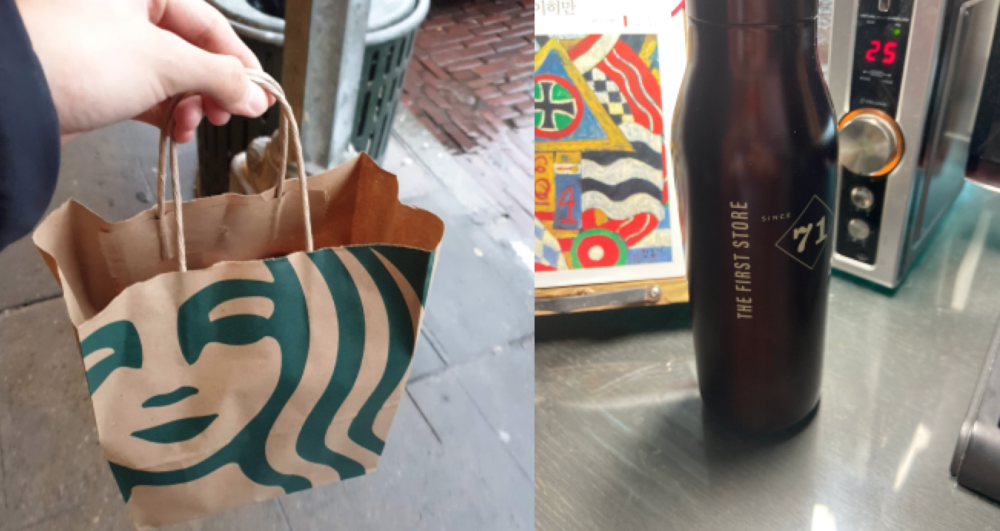
((좌)안녕, 세이렌? 과거 배를 타고 지나가던 선원들을 유혹했던 그녀는
다시금 이 땅에서 유혹에 빠진 소비자들을 홀리고 있다. 유혹의 대가가
죽음이 아니라 3만 2천원 남짓의 돈이라 참 다행이다.
(우)역시 습관을 바꾸지 못해 여행 후에 한 번도 쓰지 않아 관상용
텀블러가 되어버렸다.)
이후에 퍼블릭 마켓 시장 구경을 좀 더 하고 숙소로 돌아왔다. 여전히 비는
내리는 둥 마는 둥 거리를 적셨고 우린 저녁을 먹기 위해 아마존 건물
쪽으로 다시 나아갔다.
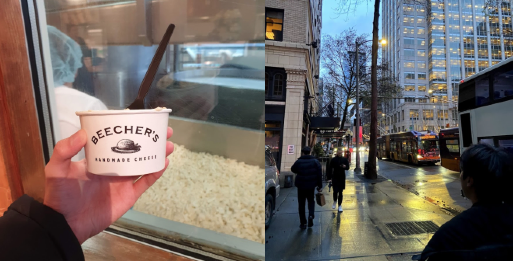
((좌)4명이 하나사서 나눠 먹은(공금 쓰기 좋아하는 누군가의 강력한
주장으로 인해) 맥앤치즈, 꾸덕한 맛의 대명사였다.
(우)시애틀 사람들도, 우리도 함께 퇴근하는 길. 거리의 조명과 날씨가
정말 잘 어울린다.)
우리의 저녁은 따듯한 국물이 있는 라멘이었다. 가게 분위기 상 혼밥하는
직장인들이 많은 것 같았다. 맛은 나쁘지 않았는데 가격이 생각보다 비싸서
약간 후회가 됐지만 배부르고 따시면 그걸로 만족한다.
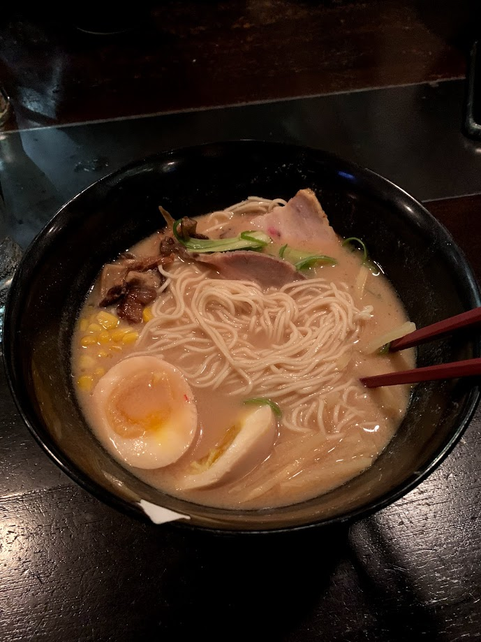
(아 갑자기 사진보니 먹고싶어진다...)
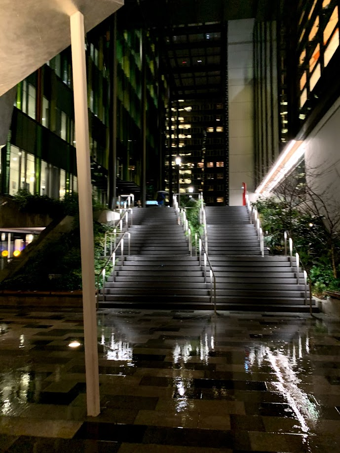
돌아오는 길, 비가 다시 내렸다. 거리의 은은한 조명과 자동차들의
헤드라이트가 비에 젖은 바닥에 비쳐 길을 밝혀주고 있었고 4명은 우산에
떨어지는 빗방울 소리에 귀를 기울이며 하루를 마무리했다. ‘와 이 동네
날씨한번 대단하다’고 절로 생각나게 한 하루. 많이 보고 즐기며 쉬지 않고
돌아다닌 우리는 얼른 지친 몸을 침대에 뉘일 생각에 빗소리에게 오디오를
내준 채, 일렬로 나란히 숙소로 걸어갔다.